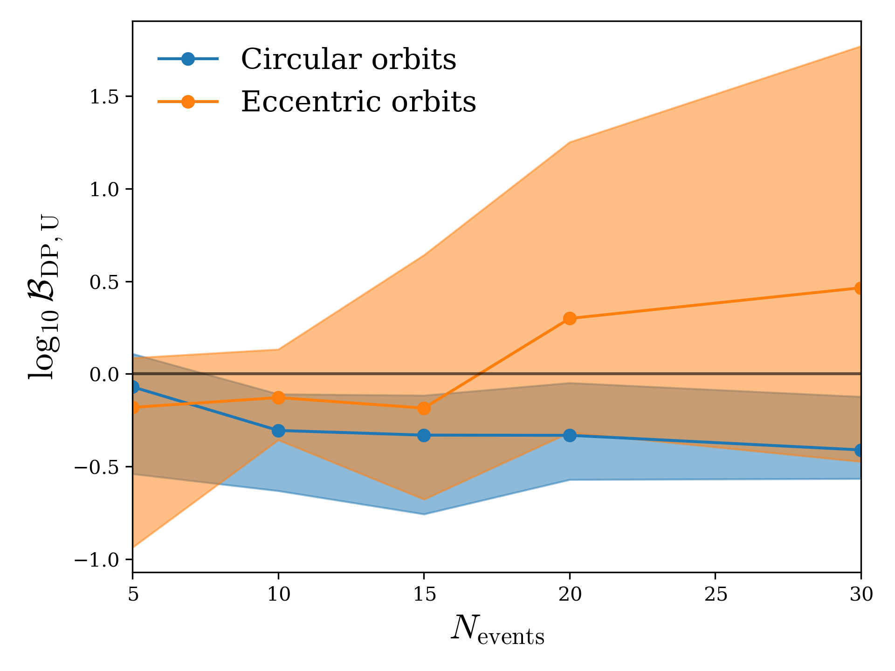
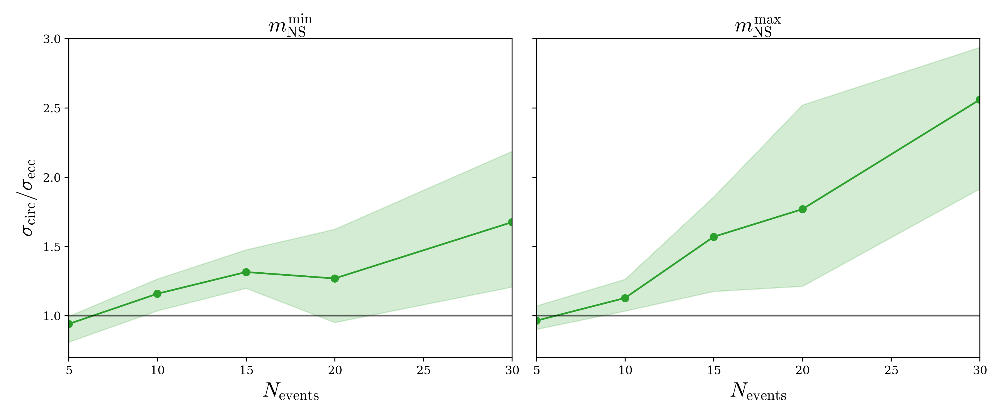

Research / 2026
Eccentricity as a Magnifying Glass: Precision Population Inference Enabled by Eccentric Neutron Star-Black Hole Mergers
The Astrophysical Journal, 1011, 2, 156, 2026.
In brief
The shape of a binary orbit can reveal how the system formed. We investigate how the sharper mass and spin measurements possible for eccentric neutron star–black hole mergers improve our ability to distinguish astrophysical populations. Simulated catalogs show stronger discrimination between neutron-star mass models and tighter constraints on their mass boundaries.
Selected figures
Click any plot to view it at full size.
Distinguishing neutron-star populations

Sharper mass boundaries

Figures from the original paper (arXiv:2607.16136v2) by Salvarese, A., Chen, H.-Y., Zimmerman, A. & Tibrewal, S. Captions are short explanatory summaries.
← Back to all publications